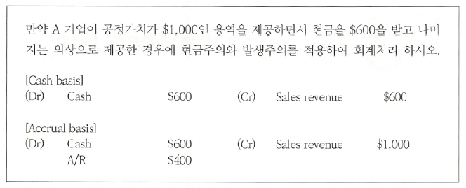

Adjusting the Accounts
Adjusting the accounts (회계기록의 결산수정분개)
accrual basis → 기간귀속
의의
timing issues
회계기록의 보고시점의 문제
회계정보가 회계정보이용자에게 유용한 정보가 되기 위해서는 필요한 정보가 적시에 제공되어야 한다 timeliness
time period assumption 개념이 도입
Time period (periodicity) assumption
기간별 보고의 가정
an assumption that the economic life of a business can be divided into artificial time period.
- 회계정보가 회계정보이용자에게 필요한 시기에 제공될 수 있도록, 기업의 존속기간을 인위적ㅇ로 구분하여 각 단위마다 회계정보를 제공해야 한다는 가정
Accounting time periods는 일반적으로 month, quarter, year로 구분하며 이 중에서 분기별로 보고할 수 있도록 구분된 기간을 quarterly time periods 또는 interim periods라고 하며 연단위로 작성하는 재무제표는 annual F/S라고 한다.
accrual-basis accounting (발생주의 회계)의 개념 적용을 위한 이론적 근거
calendar year vs. fiscal year
fiscal year - accounting time period that is one year in length. any 12 consecutive months.
Accrual-basis vs. cash-basis
수익과 비용을 어느 시점에 인식할 것인가? (timing)

Cash-basis accounting
Accounting basis in which revenue is recorded when cash is received and an expense is recorded when cash is paid out
현금을 회수한 시점에 수익으로 인식하고 현금을 지출한 시점에 비용으로 인식하는 회계처리방법
장점
- concrete, simplicity
- 현금의 수취나 지금시점에만 수익과 비용을 인식하므로 정확한 기간별 성과평가나 재무상태의 측정 및 재무보고에는 적합하지 않는 방법
Accrual-basis accounting (GAAP)
Accounting basis in which record transactions that change a company’s F/S are recorded in the periods in which the events occur, without regard to the time of receipt or payment of cash.
현금의 수취 및 지금과는 상관없이 수익과 비용이 발생한 기간에 인식하는 회계처리방법
발생주의에 따라 회계처리를 하기 위해서는 회계기간 중에 발생하여 현금주의로 기록된 거래에 대하여 기말에 발생주의로 수정하는 절차가 필요하다.
Accrual-basis accounting은 수익의 창출행위와 관련된 future cash inflows and outflows에 관련된 정보를 제공하므로 합리적으로 추정할 수 있다면 이론적으로 cash-basis accounting보다 우월하며 기간별 성과평가와 재무상태 측정 및 성과보고에 적합한 방법이다.
발생주의에서 수익과 비용을 인식하는 기준
revenue recognition principle (수익인식기준)
- Revenue are recognized when an entity satisfies a performance obligation by transferring either a good or a service to a customer (At the time the service is performed): 실현주의 원칙 → 수익은 고객에게 재화나 용역을 제공하여 수행의무를 이행했을 때 인식한다.
matching principle (비용인식기준)
- Expenses matched with revenues in the period when efforts are expended to generate revenues (수익비용대응의 원칙) → 비용은 수익을 얻기 위하여 희생된 자원이므로 수익인식시점에 대응하여 비용을 인식한다.
Adjusting entries (결산수정분개)
Entries made at the end of an accounting period to ensure that the revenue recognition and matching principles are followed.
Adjusting entries are necessary to make the F/S complete and accurate.
수정분개란 재무제표가 회사의 재무상태 및 경영성과를 발생주의에 따라 정확하게 나타낼 수 있도록, 기중에 이루어진 현금주의 회계기록을 회계기간 말에 발생주의 회계로 조정하는 절차를 말한다.
accrual (발생 계정)
Adjusting entries 중에서 accrual이란 당기 중에 revenue나 expense는 발생하였으나 기말 현재 cash의 inflow이나 outflow가 없는 경우의 adjusting entries를 말하며 일반적으로 accrued revenue (미수수익)와 accrued expense (미지급비용)로 구분된다. 이러한 accrual 계정은 기중에는 현금의 유입이나 유출이 없었기 때문에 cash basis에 의하여 회계처리할 경우 당기 중에 거래나 사건은 발생했어도 장부에는 아무런 journalize가 이루어지지 않았을 것이다. 그러므로 기말의 결산시점에서 적절한 당기의 성과를 파악하기 위해서 (현금주의를 발생주의로 전환하기 위해서) 적절한 adjusting entries가 필요하다.
Accrued revenue (미수수익): asset
당기에 revenue는 발생하였으나 B/S date까지 현금을 수취하지 못한 경우 B/S date까지 발생된 수익을 credit에 인식하면서 debit에 accrued revenue를 인식한다.


Accrued expense (미지급비용): liabilities
당기에 expense는 발생하였으나 B/S date까지 cash를 지급하지 못한 경우 B/S date까지 발생된 비용을 적절하게 인식하면서 상대방 계정으로 accrued expense를 인식한다.

deferral (prepayment: 이연)
prepaid expense, unearned revenue
The recognition of an expense(revenue) is deferred until after the related cash is paid(received).
- 차기 이후에 발생(인식)하는 수익이나 비요엥 해당하는 금액을 당기에 먼저 현금으로 선수취하거나 선지급할 때 사용하는 계정
alternative treatment of prepayment (선택적 회계처리)
- 두 회계기간 이상 발생하는 거래에 대하여 accrual 계정은 당기 중에 현금주의로 기록된 거래를 기말에 발생주의로 적절하게 보고하기 위해서 결산시점에 회계처리한다. 그러나 prepayment(deferral)은 차기 이후에 귀속되는 수익이나 비용을 당기에 인식하기 전에 먼저 cash를 지급하거나 수취하는 것이므로
현금거래시 자산(비용)이나 부채(수익)의 인식을 선택적으로 적용 할 수 있다. - prepayment 항목은 당기 현금 거래시점에 현금거래 전액을 수익이나 비용으로 인식하는 경우에는 기말에 다시 adjusting entries를 수행하여 당기에 귀속되지 않은 금액을 적절하게 asset이나 liability로 처리해야 하는 것이며, 만약 기중 현금거래 금액 전액을 asset이나 liability로 처리한 경우에는 기말 결산 시점에 당기에 발생된 금액만큼 적절하게 revenue이나 expense로 인식하는 회계처리를 선택적으로 할 수 있다.

prepaid expense (선급비용: asset)
paid for in advance of receiving their benefits


Unearned revenue (선수수익: deferred revenue, liability)
Cash received in advance of providing products or services by increasing a liability.
Unearned revenue become earned either through the passage of time.


Depreciation (감가상각)
A process of allocating the costs of assets (PPE) over their expected useful life.
- 유형자산의 취득원가를 자산의 사용으로 인한 경제적 효익을 얻는 기간동안에 합리적이고 체계적인 방법을 사용하여 원가로 배분하는 과정

Accumulated depreciation (감가상각 누계액)
- A contra asset account (자산의 차감적 계정), total amount of depreciation that the company has expensed for the asset’s useful life.
Summary

결산수정분개의 특징
adjusting entries should not involved debits or credits to cash.each adjusting entry affects one B/S account and one I/S account.


The adjusted trial balance (수정후시산표)
After all adjusting entries have been journalized and posted, another trial balance is prepared from the ledger accounts.
- 결산수정분개사항을 장부에 전기하고 난 이후 분개 및 전기의 정확성을 다시 검증하기 위해서 작성되는 발생주의를 적용한 시산표, 발생주의 시산표에서 차변합계와 대변합계 일치여부 확인
F/S의 작성순서
- adjusted T/B → I/S → B